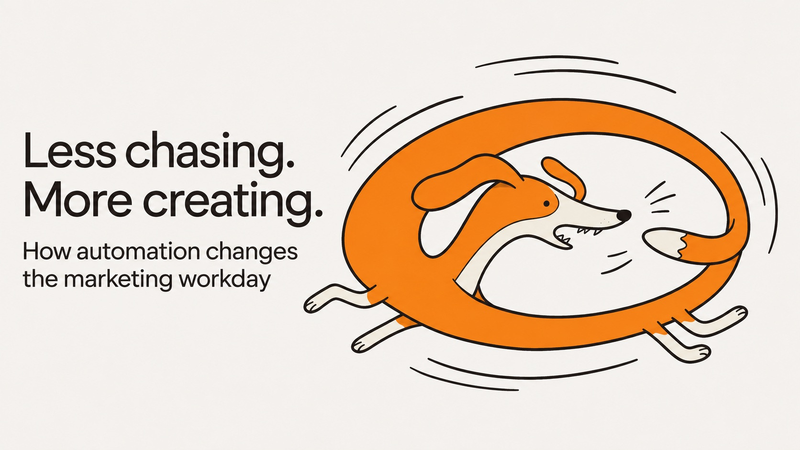

Marketing Operations · Automation & AI
What a Dog Taught Me About Marketing Busywork
How I organized 512 Design Shop requests with a form, SharePoint, and Power Automate—and why a simple confirmation email mattered.
Read the postBlog
Thoughts on marketing operations, design, and the systems that bring creative work to life.

Marketing Operations · Automation & AI
How I organized 512 Design Shop requests with a form, SharePoint, and Power Automate—and why a simple confirmation email mattered.
Read the post
Marketing Operations · Digital Signage
What leading the full transition of a 55+ display network to OptiSigns taught me about choosing tools, managing workflows, and following content all the way to the screen.
Read the post